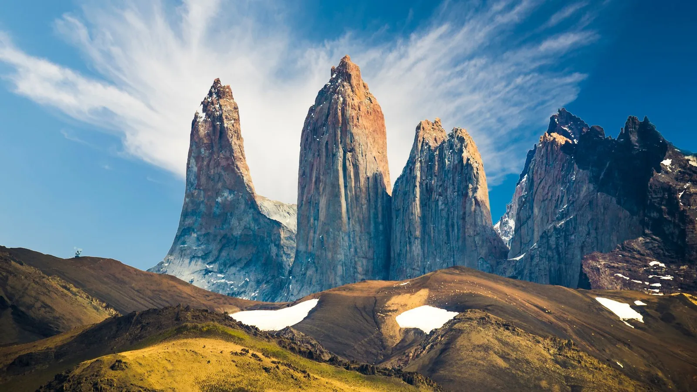
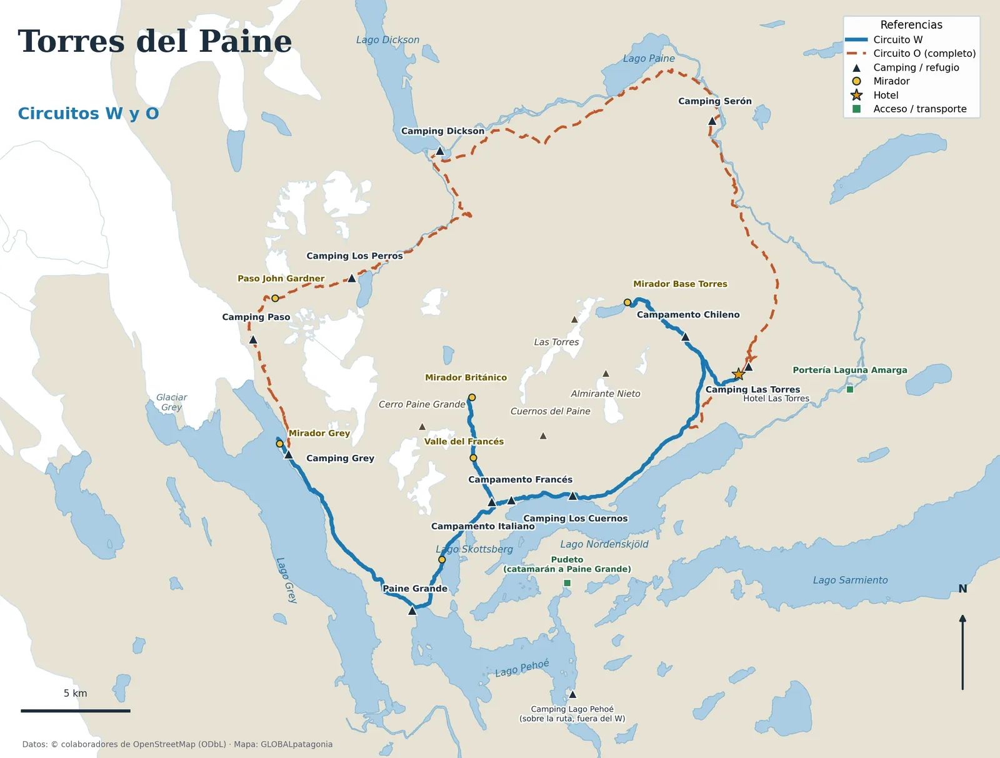
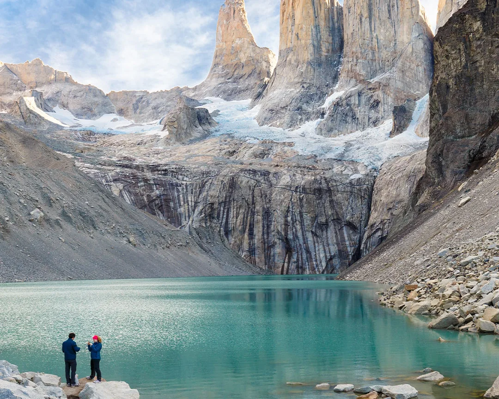
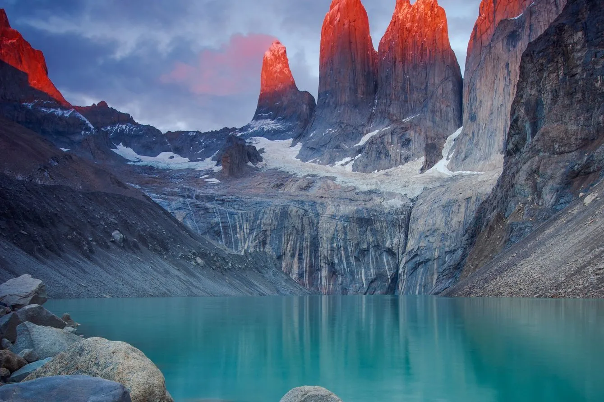
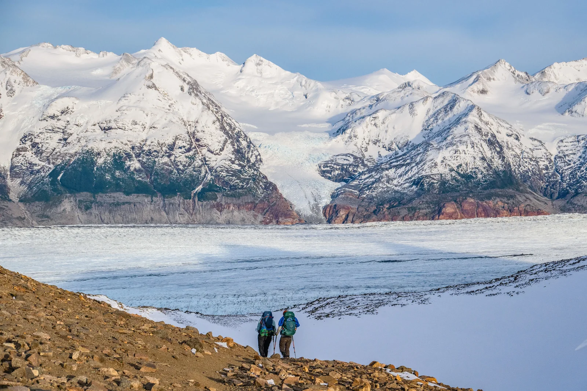
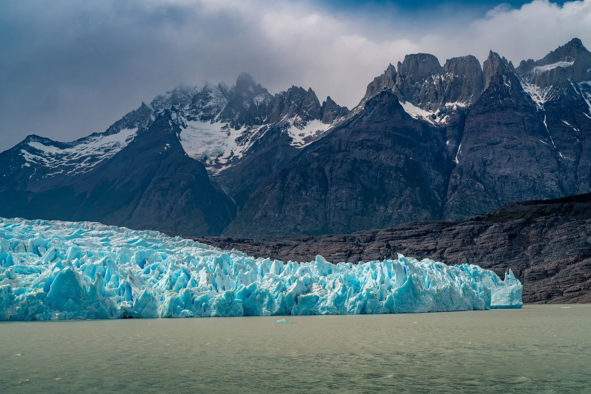
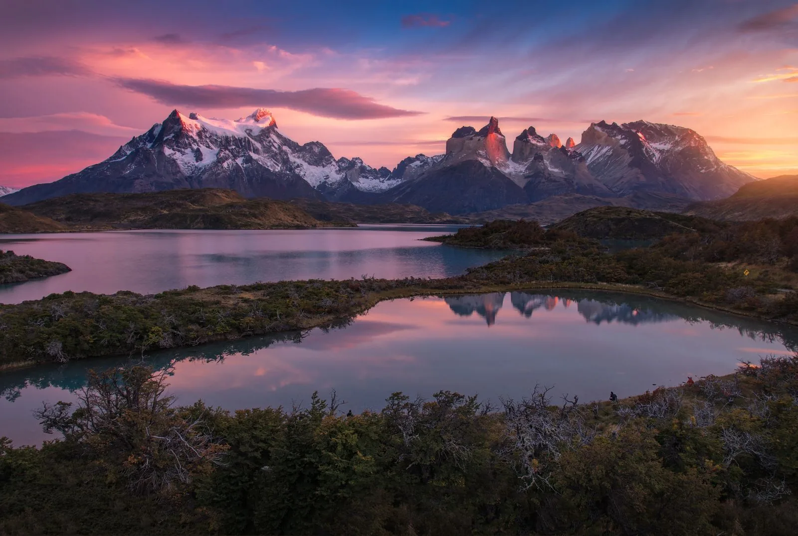
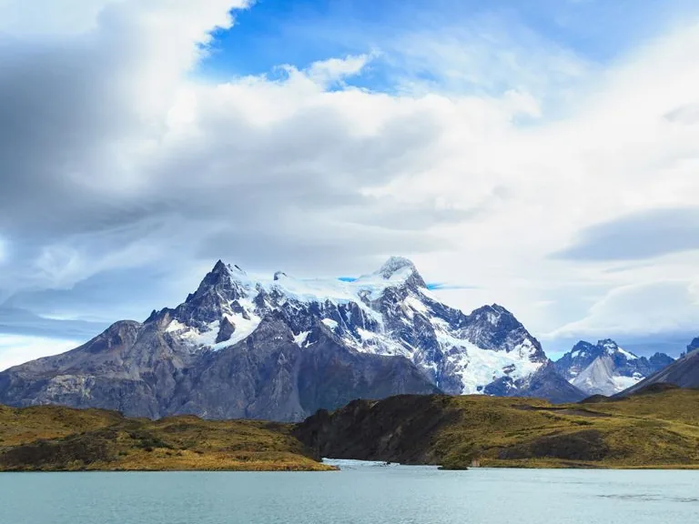
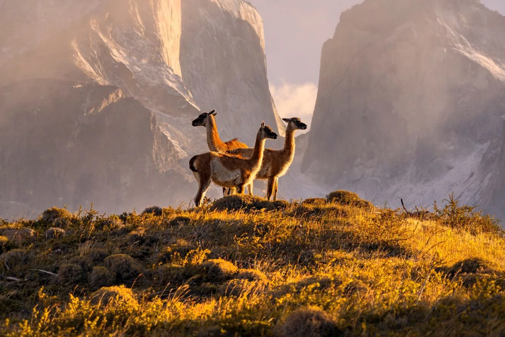
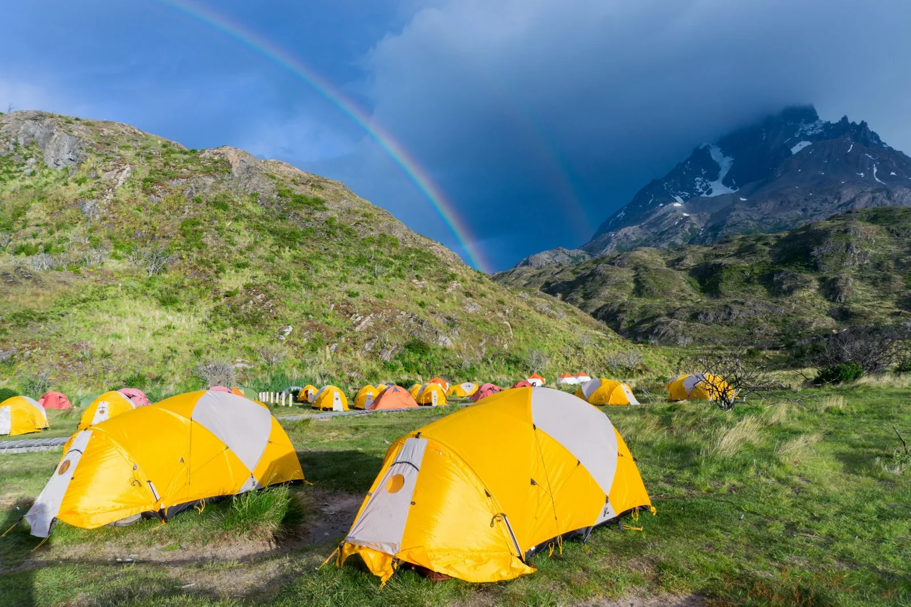

Sul Global, princípio de tudo.

Torres del Paine é o parque mais famoso da Patagônia chilena e Reserva da Biosfera da UNESCO desde 1978. Em cerca de 240.000 hectares da região de Magalhães, a uns 110 km de Puerto Natales, reúnem-se torres de granito, geleiras, lagos turquesa e uma fauna que se deixa ver: guanacos, condores e pumas em liberdade. Pode ser percorrido em uma caminhada de um dia ou em circuitos de vários dias.
Degelo, flores e trilhas mais tranquilas. O vento já é forte e alguns serviços e o circuito O estão apenas começando a temporada: confirme as datas antes de reservar.
Dias longuíssimos e o melhor clima, mas também o pico de visitantes. Refúgios e campings esgotam com meses de antecedência.
A floresta fica avermelhada e amarela, com menos gente e noites frias. Um momento muito procurado por fotógrafos.
O mais comum é voar para Punta Arenas ou El Calafate (Argentina) e seguir por terra até Puerto Natales, a base mais cômoda para visitar o parque.
Cerca de 110 km até a portaria Laguna Amarga: duas horas de ônibus ou carro, com serviços diários na alta temporada.
Ônibus com travessia de fronteira: entre 4 e 7 horas até Puerto Natales, com menos saídas no inverno. Leve o passaporte ou documento válido.
Cruza o lago Pehoé e é a porta de entrada do circuito W pelo oeste. Depende do clima e do vento: confirme os horários na hora.

| Percurso | Duração aprox. | Para quem | Reserva |
|---|---|---|---|
| Base das Torres | 1 dia (8 a 10 h ida e volta) | Quem tem pouco tempo e bom preparo físico | Ingresso do parque |
| Circuito W | 4 a 5 dias | O clássico: geleira Grey, Vale do Francês e Torres | Refúgios ou campings, com antecedência |
| Circuito O | 7 a 9 dias | Trekking completo ao redor do maciço, com a passagem John Gardner | Refúgios ou campings, com antecedência |

O cartão-postal do parque. Chega-se desde o Hotel Las Torres por uma trilha de uns 20 km ida e volta, feita em 8 a 10 horas. O último trecho, uma subida por morena, é o mais exigente. No alto esperam as três torres de granito sobre uma lagoa turquesa. Para ver o amanhecer avermelhado é preciso dormir no acampamento mais próximo da base e subir de madrugada.

A caminhada mais famosa, em forma de W: geleira Grey, Vale do Francês com o mirante Británico e a Base das Torres. Faz-se em 4 ou 5 dias, com refúgios ou campings no caminho. Muitos começam em Paine Grande, aonde se chega de catamarã desde Pudeto, e terminam na Base das Torres; também se faz ao contrário.

É o circuito completo ao redor do maciço Paine: soma o trecho norte ao W e cruza a passagem John Gardner (mais de 1.200 m), com vista para o Campo de Gelo Sul. São 7 a 9 dias em lugares bem menos concorridos. Como o W, exige reservar a hospedagem com antecedência.

Uma frente de gelo azul de mais de 6 km sobre o lago Grey, parte do Campo de Gelo Patagônico Sul. Vê-se dos mirantes da trilha (cerca de 3 a 4 horas desde Paine Grande) ou navegando até a frente. É a extremidade oeste do circuito W.

Para quem não caminha vários dias: da estrada principal chega-se aos mirantes do lago Pehoé e do Salto Grande, com os Cuernos del Paine ao fundo. É a foto clássica do parque e pode ser feita em um dia de carro desde Puerto Natales.

Entre o Vale do Francês e as Torres, o circuito W margeia o lago Nordenskjöld, com os Cuernos del Paine como pano de fundo. Os acampamentos Los Cuernos e Francés ficam neste trecho.

O parque é um dos melhores lugares do mundo para ver a fauna patagônica sem grades: manadas de guanacos na estepe, condores sobre os penhascos, emas e, com sorte, pumas, sobretudo nas zonas do lago Sarmiento e da Laguna Amarga. Mantenha sempre a distância.

São operados por concessionários privados e pela CONAF. Para percorrer o W ou o O, a reserva antecipada de hospedagem é obrigatória: sem ela não se pode entrar na zona de montanha.
É o ponto de partida do W e de chegada do catamarã. Camas, refeições e camping.
O hotel mais próximo da trilha clássica. Reabriu sua temporada em 1º de outubro de 2026.
Opções com camas para quem prefere dormir sob um teto sem fazer os circuitos.
A base mais prática: hostels, hotéis, restaurantes e lojas de equipamento. Dali saem os ônibus diários para o parque e se organizam excursões de um dia.
As caminhadas de Torres del Paine são exigentes: muitas horas por dia com mochila, desníveis, terreno de pedra e barro, vento forte e clima que muda rápido. Os serviços médicos ficam longe, e um problema de saúde no meio do circuito pode se complicar.
Este guia é informativo e não substitui a opinião de um médico nem de um guia profissional. Cada pessoa deve avaliar seu próprio estado e o de quem viaja com ela.